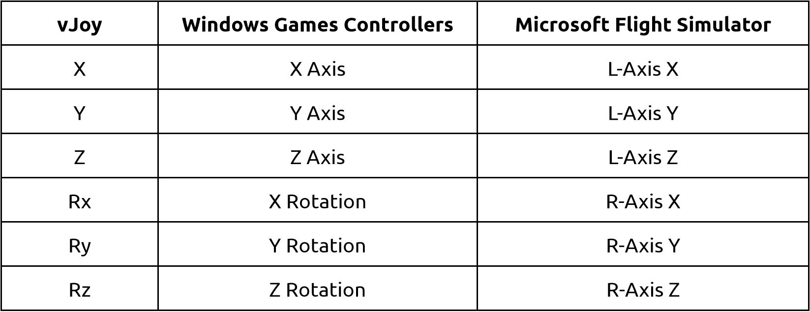

You have to select the axis or button from the drop down instead.
MSFS provides a handy way of setting up controls quickly by asking you to move the axis you want to assign and automatically selecting it, but this doesn’t work for us. When you use this mapping software, two signals will be presented to MSFS - the real input button (that you don’t want to use in sim), and the vJoy axis or button as configured by this software (which you do want to use). MSFS always sees the real button input first, then presents you with an error along the lines of ‘the input you’re moving or pressing is on a different controller’ to the vJoy, which of course it is. You can manually select the relevant axis from the drop down menu though, which works fine.
The virtual output axes are provided by another piece of software called vJoy
Unfortunately, the same axis will be labelled differently in vJoy’s configuration software, Microsoft Windows Game Controllers and Microsoft Flight simulator. This is my current understanding of the mappings.

The IL2-Sturmovik Great Battles series provide a handy way of setting up controls quickly by asking you to move the axis you want to assign and automatically selecting it, but this presents a problem for us.
When you use this mapping software, two signals will be presented to IL2 - the real input button (that you don’t want to use in sim), and the vJoy axis or button as configured by this software (which you do want to use).
Unfortunately IL2 always sees the real button input first which makes it very difficult to get it to use the desired vJoy axis or button. Though not ideal, it is possible to work around this since IL2 only registers its usable devices on start up of the game. You only need to do this once to set up your controls.
A mapping describes how an input button is translated to a virtual output by the AuthentiKit Tuning App. There are several types of mappings as described in this dedicated page.
I'll be maintaining the AuthentiKit Tuning App and adding features on a best endeavours basis for free, but unfortunately I'm not generally available to provide detailed help on your setup.
It's very helpful to raise issues if you find something that's not working as expected though. Please do so via the GitHub issues page here:
https://github.com/Colmanian/AuthentiKit-Trim-Calibration/issues
or if it's related to vJoy, here:
Replica flight controls for DCS, Microsoft Flight Simulator, IL2, X-Plane and other flight simulators. Self-build kits – download all plans, files & materials list at no charge. This is a freeware community project.
Yes and no - it’s made by me (Ian Colman) under the direction and guidance of Phil Hulme. Phil is the owner and mastermind behind AuthentiKit and I’ve been working with him on this software, but ultimately I’m a member of the AuthentiKit discord community.
It’s been developed and provided for free under the Creative Commons BY NC ND 4.0 license. You can find the source code here:
Yes! While some features such as the presets are only relevant to AuthentiKit, the app itself is generic enough that you should be able to map any joystick or gamepad button to a vJoy button or axis.
created with
Offline Website Builder .